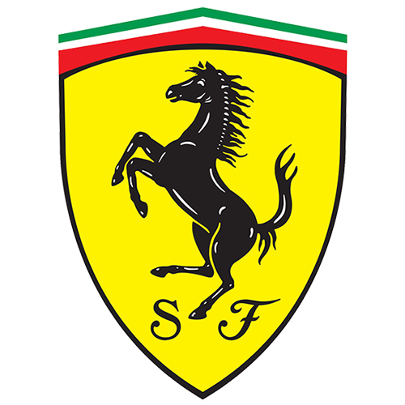
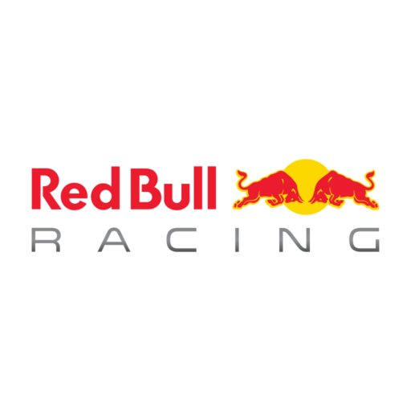
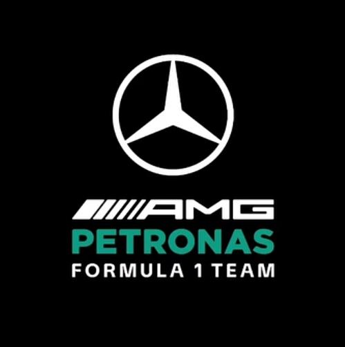
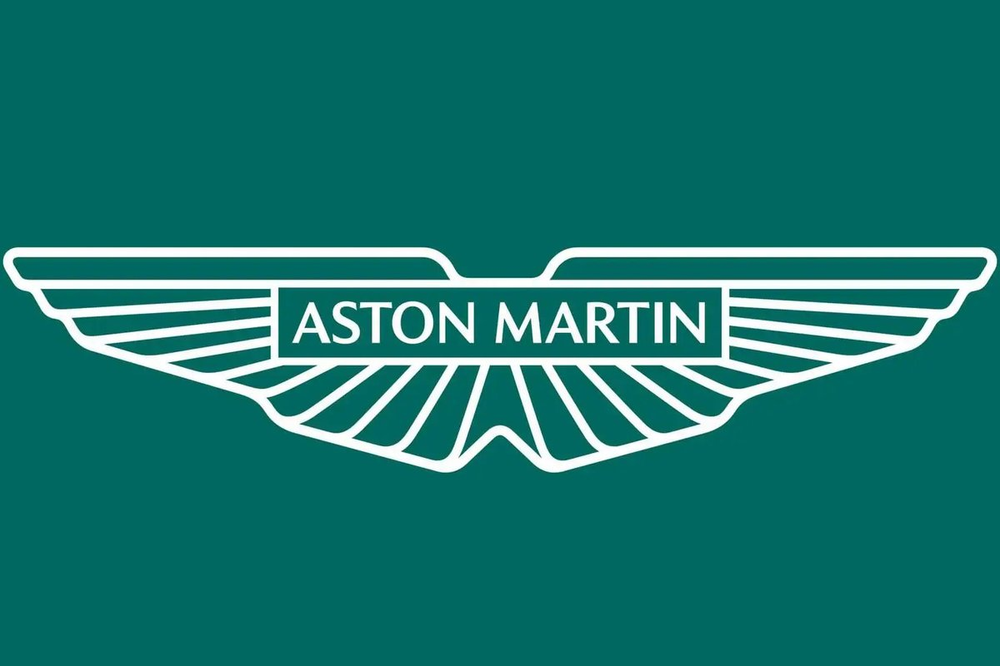
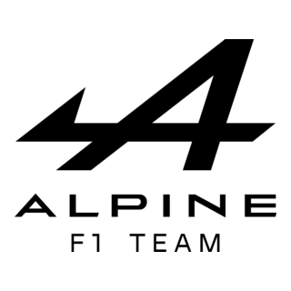

Equipos
La temporada 2026 tiene 11 escuderías: Mercedes, Ferrari, McLaren, Red Bull Racing, Racing Bulls, Alpine, Haas, Audi, Williams, Aston Martin y Cadillac, que se suma como equipo nuevo. Hay nombres históricos como Ferrari, McLaren y Williams, y marcas de fabricantes como Mercedes, Audi y Alpine. Los puntos de los dos pilotos de cada equipo definen el Campeonato de Constructores.
Ferrari

Nombre: Scuderia Ferrari
País: Italia
Fundación: 1929
Base: Maranello, Italia
Pilotos: Lewis Hamilton y Charles Leclerc
Ferrari es uno de los equipos más importantes y reconocidos de la historia de la Fórmula 1. La escudería italiana participa en el campeonato desde su primera temporada en 1950 y es conocida mundialmente por sus autos de color rojo.
A lo largo de su historia consiguió numerosos campeonatos de pilotos y constructores. Por Ferrari pasaron grandes pilotos como Michael Schumacher, Niki Lauda, Alain Prost y Fernando Alonso.
Actualmente, Ferrari continúa siendo uno de los equipos con mayor cantidad de seguidores y busca volver a luchar constantemente por los campeonatos.
Red Bull Racing

Nombre: Oracle Red Bull Racing
País: Austria
Fundación: 2005
Base: Milton Keynes, Reino Unido
Pilotos: Max Verstappen y Liam Lawson
Red Bull Racing es uno de los equipos más exitosos de la Fórmula 1 moderna. Aunque fue creado en 2005, rápidamente consiguió convertirse en uno de los principales equipos de la categoría.
Su primera gran época de dominio llegó entre 2010 y 2013, cuando Sebastian Vettel consiguió cuatro campeonatos mundiales consecutivos. A partir de 2021, Max Verstappen comenzó otra etapa de gran éxito para el equipo.
Red Bull es reconocido por sus autos competitivos, su fuerte desarrollo aerodinámico y su capacidad para diseñar monoplazas muy rápidos.
Mercedes

Nombre: Mercedes-AMG Petronas F1 Team
País: Alemania
Fundación: 2010
Base: Brackley, Reino Unido
Pilotos: George Russell y Kimi Antonelli
Mercedes es uno de los equipos más importantes de la Fórmula 1 actual. Aunque la marca tiene una larga historia en el automovilismo, su actual equipo comenzó a competir en la F1 en 2010.
Su época más exitosa comenzó en 2014, con la introducción de los motores híbridos. Durante varios años dominó la categoría junto a Lewis Hamilton, consiguiendo numerosos campeonatos de pilotos y constructores.
Mercedes se caracteriza por su gran desarrollo tecnológico, sus motores y su capacidad para adaptarse a los cambios de reglamento.
McLaren

Nombre: McLaren Formula 1 Team
País: Reino Unido
Fundación: 1963
Base: Woking, Reino Unido
Pilotos: Lando Norris y Oscar Piastri
McLaren es una de las escuderías históricas de la Fórmula 1. Fue fundada por Bruce McLaren y comenzó a competir en el campeonato mundial en 1966.
Durante su historia tuvo grandes pilotos como Ayrton Senna, Alain Prost, Mika Häkkinen y Lewis Hamilton. El equipo consiguió múltiples campeonatos de pilotos y constructores.
En los últimos años McLaren volvió a convertirse en uno de los equipos más competitivos de la categoría, destacándose especialmente por el rendimiento de sus monoplazas y por su joven dupla de pilotos.
Aston Martin

Nombre: Aston Martin Aramco Formula One Team
País: Reino Unido
Fundación del equipo actual: 2021
Base: Silverstone, Reino Unido
Pilotos: Fernando Alonso y Lance Stroll
Aston Martin regresó oficialmente a la Fórmula 1 como equipo en 2021. La escudería utiliza el característico color verde asociado históricamente con el automovilismo británico.
El equipo cuenta con Fernando Alonso, uno de los pilotos más experimentados de la categoría, y Lance Stroll. Aston Martin busca convertirse en un equipo capaz de luchar regularmente por victorias y campeonatos.
La escudería también está realizando importantes inversiones en tecnología e infraestructura para mejorar su rendimiento en las próximas temporadas.
Alpine

Nombre: BWT Alpine F1 Team
País: Francia
Fundación: 2021
Base: Enstone, Reino Unido
Pilotos: Pierre Gasly y Franco Colapinto
Alpine es el equipo de Fórmula 1 perteneciente al grupo Renault y utiliza el nombre de la marca francesa Alpine. El equipo debutó con esta denominación en 2021, reemplazando a Renault en la categoría.
La escudería tiene su sede principal en Enstone, Reino Unido, mientras que el desarrollo de sus motores se encuentra relacionado con las instalaciones de Renault en Francia.
Alpine busca mejorar progresivamente su rendimiento y volver a competir regularmente en las posiciones más importantes de la parrilla.